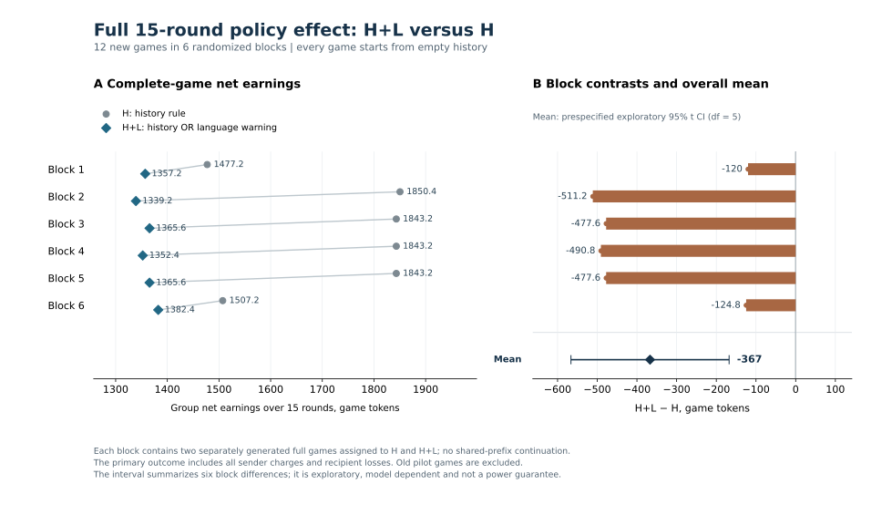

Research update · 27 November 2026. The interactive Qwen game remains a measurement audit. A subsequent randomized pilot compared twelve fresh complete games: adding the specified language warning reduced mean group net earnings by 367 tokens (21.25%). The completed policy comparison, a controlled reference study, and the held-out forecast audit are reported separately below. The complete research record links every version to its data and code.
What is a repeated public goods game?
In game theory, a public goods game models voluntary contributions to a shared resource, with its return divided among everyone regardless of who contributed (Fehr & Gächter, 2000). Here 4 players each receive 20 tokens per round, and they choose simultaneously how much to keep or contribute.
With the other choices fixed and punishment off, each extra contribution token reduces the contributor's immediate earnings by 0.6 and raises group earnings by 0.6. This creates an incentive to free ride, even though contributions benefit the group. Repeated interaction adds possible future responses, making communication and enforcement part of the strategic problem.
The same players meet again and can see each other’s earlier choices. That shared history lets them respond to what happened in previous rounds.
Let 4 agents play the same game
I used the same model checkpoint for all 4 agents and gave them neutral prompts without assigned personalities. Each agent generated its own public messages and contribution decisions.
Start with the game clock
At the start of each round, agents get a fresh endowment of 20 tokens. The prompts tell them to maximize their cumulative net earnings and leave the contribution amount up to each agent.
Public messages come before simultaneous contributions, and settlement reveals the completed choices. Only the history rule activates punishment in this game, with its next state announced after settlement.
When punishment starts and who pays
The history rule uses the previous round's completed contributions, with a warning issued if any agent contributes 7 or less. Eligible warnings after rounds 3 through 14 activate punishment for 1 following round, and rounds 1 through 3 are always inactive. A fresh warning is required to keep punishment active, and round 15 ends the game without a further activation.
In an active round, the contribution gap below the reference of 10 is divided by 3 and rounded down, giving a sanction level for each target. Each of the other 3 agents automatically sends that many punishment points, and each point costs its sender 1 token and removes 3 tokens from its target.
An agent's sender cost adds up its points against the other 3 targets, and its own recipient fine is calculated separately. For each target with sanction level qi, the partners together spend 3qi and the target loses 9qi. Both deductions leave the group, reducing its total payoff by 12qi.
Round 13 activates punishment for round 14 because its minimum contribution is 0, but round 14's deductions use round 14's choices. P3 contributes 8 in that active round, giving a gap of 2 and a rounded sanction level of 0. The other 3 agents each contribute 10, leaving every sanction level at 0 and producing no sender costs or recipient fines.
Punishment is active in 6 recorded rounds, and every contribution in those rounds is at least 8. Realized enforcement costs therefore total 0 across the game, leaving cumulative group net payoff at 1417.8 tokens. This accounting explains the absence of deductions, without establishing what those agents would have contributed under another institution.
Read the exact activation function
The function reads completed contributions, and its Boolean result becomes the next round's state.
Read the exact payoff settlement
The sender costs and recipient fines both leave the group, and the returned ledger records them separately.
Follow the contribution path
This interactive path preserves the original Qwen game. The new twelve-game policy comparison uses a different generating model and is analyzed separately; its observations do not replace or enlarge this archived trajectory.
Mean contributions change at all 14 transitions. They are higher when punishment is active, in rounds 4, 6, 8, 10, 12 and 14. The rule uses earlier contributions to decide when punishment is active. I calculated the language scores after the game.
Start at round 10 to see P4’s request beside the recorded choice. Move to round 11, when punishment was off and the average contribution dropped to 2.5 tokens. The players already knew the next punishment state when round 10 ended. Select a round or a message score to read what the players said and what they contributed.
What makes a message unexpected?
The score is mean negative log probability under a fixed DistilGPT2 checkpoint, using only the current message tokens in the average. The model receives exactly the preceding round's 4 public messages in player order, followed by the current player's header (Hugging Face, n.d.). A high score means that this text is less expected under that particular context, without supplying a direct measure of cooperative intent.
The group statistic is St = maxi si,t, preserving the existing aggregation over the 4 messages. Round 1 remains unscored because it has no preceding message round, leaving 56 scored messages across rounds 2 through 15.
Read the scoring function
The prefix offset keeps context tokens out of the mean, and inputs beyond 1024 tokens are rejected without truncation.
The largest score belongs to P4 in , where a request for 5 receives a loss of 4.237 despite the author's actual contribution of 10. The message says this request avoids sanctions, although contributing 5 under that round's active rule would incur a recipient fine of 9. This is a concrete inconsistency with the rule, and it does not reveal the author's private intent.
The contrast is different in , where all 4 players send identical text and the group score is 2.144. The next mean contribution falls from 9.5 to 0, producing the largest decline despite this relatively low score. Punishment has already been announced as inactive for the final round, giving context for the change before it occurs.
A public request should also be kept separate from a personal promise, because asking everyone to contribute 10 does not state what the speaker will choose. In the final round, P1 and P4 still request 10 while all players choose 0. P2 explicitly advocates free riding and scores 3.974, below the earlier cooperative-sounding message that produced the maximum loss.
Read the next change with the known state
Across the 12 eligible origins in rounds 3 through 14, mean contributions rise in all 6 active next rounds and fall in all 6 inactive next rounds. Their mean changes are +6.167 and −6.375 tokens respectively, separating the observed directions by information already announced at time t.
Hover over a labelled round to inspect its score and the change that follows.
The group score has a descriptive Spearman association of −0.127 with the next contribution change, and the plot places high scores before both increases and decreases. That association summarizes the displayed path, with no significance test or claim of validation across independent games.
This observation motivated a later exploratory forecast audit: compare history with history plus language on the same held-out games, while retaining the announced next punishment state in both feature sets. The audit uses the six newer H games, rather than treating the rounds of this Qwen game as independent replications. The timing principle follows forecast-evaluation practice (Hewamalage et al., 2023).
Inspect the forecast origins in the saved data
This browser view reads saved observations, and it does not fit a forecasting model or regenerate any future choices.
Check whether quantities drive the score
Numerical strings and number words from 0 through 20 are replaced by NUMBER in both the previous context and current message, providing an input-sensitivity check. The same 56 messages are then scored under the same checkpoint, with a raw-to-masked Spearman association of 0.987. Their mean shift is −0.121 nats per token, preserving most of the ordering.
This result does not support attributing the score pattern mainly to requests saying 5 instead of 10, although masking also changes tokenization. The raw score remains the measurement throughout the note, and neither version was used to activate punishment in this archived Qwen game.
Read the saved-score reproduction check
NUMBER is defined by the quantity pattern in the full source, and every reproduced score is checked against its saved counterpart.
Exactly 2 scored messages repeat text from the immediately preceding round, with mean loss 1.056 compared with 2.279 for the other 54 messages. At round 14, identical current text still yields losses from 2.142285 to 2.144318 across players, because the fixed player header remains part of the context. These observations identify properties worth checking in a measurement, without isolating a general repetition effect.
What happened when language entered the policy?
I have now completed the comparison that motivated the original note. H uses completed contributions to activate punishment for the following round. H+L adds a language warning when the maximum DistilGPT2 message score strictly exceeds the independently frozen threshold, 4.620724508132623. Both arms allow the same public communication and retain the fixed sanction reference of 10.
Twelve fresh 15-round games using GPT-6.1-Sol were randomized within six blocks, one game per arm in each block. Every game began from an empty history. Mean cumulative group net earnings were 1,727.4 tokens under H and 1,360.4 under H+L: a difference of −367.0 tokens (−21.25%). All six block differences were negative. The exploratory 95% t interval is [−566.26, −167.74]; the six block contrasts are the analysis units.
| Full-game outcome | H | H+L |
|---|---|---|
| Mean group net earnings, 15 rounds | 1,727.4 | 1,360.4 |
| Mean contribution per player-round | 14.65 | 4.46 |
| Mean active punishment rounds per game | 0.50 | 6.83 |
| Actual sanction deductions, both cost types | 0 | 0 |

Actual sender charges and recipient fines were zero in both arms. The earnings loss came from lower contributions, rather than realized punishment deductions. Contributions already differed during the first three rounds, when punishment was unconditionally off. The result estimates the total effect of the disclosed policy package. It does not separately identify announcement, communication, or actual routing as the cause of the loss.
The payoff benchmark remains explicit: the one-round own-payoff optimum is 0 when punishment is off and 8 when it is on, holding partners' contributions fixed. This stage-game calculation does not determine equilibrium play in the repeated game. It helps interpret a possible shift toward the lowest unpenalized contribution, which the complete-policy result alone does not establish as its causal mechanism. Read the benchmark.
When expression becomes the next reference
A separate controlled experiment asks what happens when policy-induced messages become the background against which later messages are scored. Four independent producer-pair blocks share one archived source history. Recipients see the same two candidate reference texts; the intervention changes which reference is actually used. Their new communication and freely chosen contributions are then observed in ON/OFF continuation branches.
Using the language-control producer's reference rather than its paired YOKED reference lowered branch-weighted three-round group net earnings by 7.296 tokens on average. This is a local reference effect, estimated separately from the −367-token full-policy contrast. It does not identify a mediator of that larger difference. The recipient-policy by reference-source interaction was zero, and ordinary permitted messages could still cross the scoring threshold. The evidence therefore does not establish irreversible channel failure or recipient-specific readaptation.
This connects the game to strategic adaptation and state-dependent monitoring: a fixed neural scorer can still produce a changing effective rule when its reference text changes. The study record gives the exact branches, payoff weights and scope; the related-work comparison distinguishes this particular enforcement setting from those broader ideas.
Does language add an early warning?
An exploratory offline audit reused the six H games from the new policy comparison. There were 72 eligible forecast origins and 69 where language could add an activation beyond H. The tested fixed text method did not stably improve on strong public-history baselines under game-held-out prediction and trajectory-family sensitivity checks.
Among the 69 candidate origins, game-held-out Brier loss was 0.03854 with text, 0.03433 for history, and 0.03309 for a history-state lookup; lower is better. Only eight positive risk events occurred, five at the final-round transition. These are exploratory results from already viewed paths, not a prospective validation. They neither rule out all language representations nor establish that a directly collected structured report would be sufficient.
Predicting risk and improving welfare are separate claims. This audit collected no same-state counterfactual choices and identifies no causal gain from acting on its predictions. Read the audit and reproduce its predictions.
Can anchoring the reference change the feedback?
The proposed mechanism study crosses whether messages causally control enforcement or follow a matched YOKED schedule with whether the future scoring reference rolls with new expression or remains independently anchored. Players would know their actual update rule before writing fresh messages, and their contributions would remain freely chosen under the original payoff rule. This conceptual design has not been run; exposure matching, history-warning priority, and anchor selection still require a finalized protocol.
The test compares the LIVE minus YOKED earnings gap under rolling references with the same gap under anchored references. The hypothesis is that control-induced expression creates an additional later loss under rolling references. Merely rescoring frozen old messages under a new background would not test this response to the update policy. The existing zero recipient-policy interaction does not establish this different, prospective interaction.
Does the reference-update rule change strategic expression and subsequent group earnings specifically when expression controls enforcement? The proposed mechanism study sets out this prediction without promising a positive welfare repair. Explaining the separate full-policy loss, including the early contribution shift, remains a distinct question. I would value feedback on whether this interaction is the clearest test of an institutional feedback mechanism beyond ordinary strategic adaptation.
Read and reproduce the calculation
The scoring code uses the cached DistilGPT2 revision 2290a62682d06624634c1f46a6ad5be0f47f38aa, with 1 CPU thread and
deterministic execution. The existing reproduction check matched all 56 original scores and all 56 masking diagnostics within 0.000001 nats
per target token, preserving full precision in the downloadable data.
Each code excerpt above is taken directly from its linked source file, with its original line numbers displayed. The reproduction archive contains the saved round records, and running its script scores those records without generating new agent responses.
The downloads below reproduce the archived Qwen measurements. Newer studies have their own policy data, reference data, and forecast data. The research registry covers all 33 study families, including archived diagnostics and unrun concepts, with version-specific evidence and code.
| Material | What it contains |
|---|---|
| Reproduction archive | Saved inputs with the scoring script and verification data |
| Complete scoring source | The exact Python file behind the scoring excerpts |
| Frozen payoff rules | The source rule used for the Midway game |
| Message scores | 60 public messages with 56 defined original losses |
| Round measurements | Observed contributions with their announced next states |
| Full analysis data | Exact values used by every interactive figure |
| Trajectory PNG and transition PNG | Standalone figures for slides or discussion |


Qwen checkpoint b968826d9c46dd6066d109eabc6255188de91218. The original score runtime used Python 3.13 with PyTorch 2.9.1 and
Transformers 5.20.2. No language threshold was applied during this archived Qwen game. The later policy pilot used its separately frozen
threshold.
References
Fehr, E., & Gächter, S. (2000). Cooperation and punishment in public goods experiments. American Economic Review, 90(4), 980–994. https://doi.org/10.1257/aer.90.4.980
Hewamalage, H., Ackermann, K., & Bergmeir, C. (2023). Forecast evaluation for data scientists: common pitfalls and best practices. Data Mining and Knowledge Discovery, 37, 788–832. https://doi.org/10.1007/s10618-022-00894-5
Hugging Face. (n.d.). DistilGPT2 [Model card, revision 2290a62682d06624634c1f46a6ad5be0f47f38aa]. Pinned model documentation.
Qwen Team. (2025). Qwen3 Technical Report. arXiv. https://arxiv.org/abs/2505.09388
Sanchez-Lengeling, B., Reif, E., Pearce, A., & Wiltschko, A. B. (2021). A gentle introduction to graph neural networks. Distill. https://doi.org/10.23915/distill.00033
The article layout and linked explanations take their design reference from the Distill article (Sanchez-Lengeling et al., 2021), with diagrams implemented for this game's existing observations.